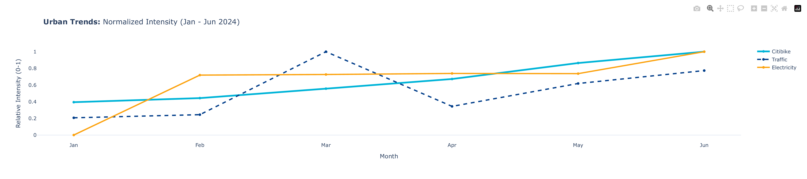
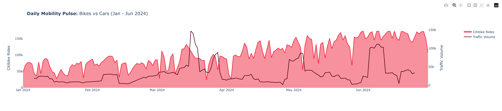
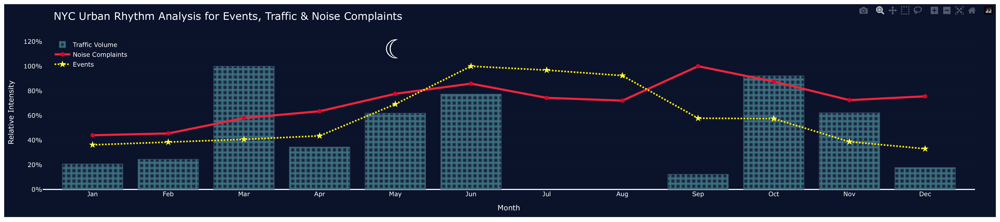

City Breathing Rhythm

We normalized Citibike rides, traffic volume, and electricity consumption to a 0-to-1 scale to compare how New York's pulse changes from winter to summer. Citibike acts as a perfect thermometer—rising linearly with temperature. Traffic, however, spiked erratically in March before crashing in April, revealing chaos rather than seasonal patterns. Electricity remained our stable baseline, jumping in February for heating and plateauing until June's air conditioning demand. New York operates on three disconnected rhythms: predictable bike commuting, volatile traffic, and steady energy consumption.

Zooming into daily patterns, a critical question emerged: does this seasonal pulse hold at the day to day level?
The daily view shows Citibike data as a literal heartbeat spiking and dropping with weekends and weather, growing stronger from January to June. Traffic, in contrast, shows massive irregular spikes like late March, proving it's driven by unpredictable events rather than daily patterns. Takeaway: micromobility is stable and plannable; traffic is fundamentally chaotic.
Secondary Factors Analysis

This visualization compares normalized traffic volume, noise complaints, and social event activity to capture New York City's broader urban rhythm across 2024. From January through July, both event frequency and noise complaints show a steady upward trend, reflecting the intensification of social activity and outdoor presence as the year progresses. Traffic volume follows a similar pattern, with noticeable increases particularly in April and June, suggesting periods of heightened mobility that align with seasonal transitions and event-driven movement. A visible gap during July and August highlights data scarcity rather than a true decline, underscoring the importance of contextualizing absences within the dataset. After October, all three indicators exhibit a general downturn, marking a collective slowdown in urban intensity as colder months approach. Together, these synchronized rises, plateaus, and declines illustrate how movement, social activity, and urban disturbance co-evolve over time, reinforcing the notion of a shared underlying city rhythm shaped by both behavioral and seasonal forces.
Hot & Cold Zones
This interactive visualization reveals secondary urban signals that shape New York City's daily and seasonal rhythm. When examined over time, noise complaint intensity and social event frequency tend to increase during periods of heightened urban activity, although this overlap is not always exact. A notable spike in noise complaints observed on September 15 highlights a temporary deviation from the city's underlying activity cycle, while subtle yet persistent temporal patterns can be detected in the background of both noise and event distributions. The air quality distribution further shows a clear increase during the summer months, underscoring how seasonal environmental conditions influence the urban experience. Taken together, these observations suggest that the city's "breathing" is shaped not only by mobility or energy use, but also by social and environmental factors and the deviations they introduce, positioning this visualization as a central element in understanding the city's multilayered dynamics.
Regression

If traffic is this chaotic, what's its real impact on urban life? We tested the obvious assumption: more cars = more noise complaints.The regression revealed a weak link: R² = 0.042, meaning traffic explains just 4% of noise complaints. Despite the slight upward trend, data points scatter wildly low-traffic days still saw massive complaint spikes. The verdict: construction, parties, and neighbor disputes drive noise complaints far more than traffic does. Reducing cars alone won't solve the noise problem.